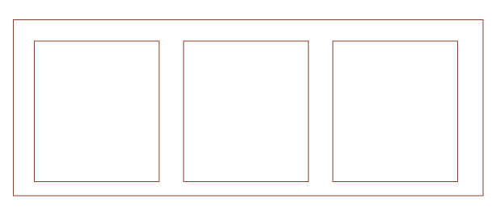

Introduktion
Design:
Vi starter ud med en gennemgang af kunst-historien og dens mange typografier, kompositioner, farveskalaer og kompositioner. Disse har gennem tiden sat deres præg på os og hvordan de danner hver især et udtryk i vores underbevidsthed, som kendetegner hvert enkelt stil.
- Gestaltlovene:
- Placering og samspil mellem figurer og elementer, som vores hjerne tolker dem.
Nærhed, lighed, lukkethed, kontinuitet og symmetri.
- Placering og samspil mellem figurer og elementer, som vores hjerne tolker dem.
Layoutprincipper:
- Responsive:
- Et design, som skalerer til flere enheder - Mobil, Tablet og PC.
- Static:
- Fixed Content, som vises ens for alle besøgende.
- Fluid:
- Som responsive med henblik på skærmstørrelser.
- Adaptive Content:
- Igen er der tale om responsivt design, myntet på content.
- Mobile-first:
- Vi bygger først et layout til mobil, da vi her ser 80% af vores trafik.
- Graceful degradation:
- Content beholder sin størrelse, men frames til mindre enheder
- Progressive enhancement:
- Content skaleres responsivt til alle skærmstørrelser.
Konventioner:
Hjemmesider har en opbygning, som oftest er opbygget ens. Det har skabt en meget vanlig brugergrænseflade.
- Navigation:
- Nav placeret øverst, og oftest venstre-orienteret.
- Logo:
- Placeret oppe til venste over Nav.
- Microcopy:
- En lille tekst, som belyser brugerens næste trin, eller en skjult funktion.
- Knapper og links:
- Knapper og links er tydeligt markeret og differentierer sig fra det øvrige indhold på sitet.
- Indkøbskurv:
- Indkøbskurven i en webshop er placeret øverst til højre på sitet.
- Brugerens intuition:
- Logo forventes at være klikbart og føre tilbage til forside.
Burger-menu'en udfolder sig, når man trykker på den.
- Logo forventes at være klikbart og føre tilbage til forside.
- Designvalg og farveskema:
- Der er et klart visuelt hierarki
Bryder man disse vaner, skaber man en uro i brugen af ens site, da brugeren er på overarbejde i de uvante omgivelser.
En forhindring i at opsamle den ønskede information ≍ et dårligt site.
Design Process
- Idegenerering:
- Finurlige tanker nedskrives. Ideer optages, forarbejdes og behandles.
- Moodboard:
- Design-"Brainstorm" i billede-form. En collage af inspiration (farver, komposition og udtryk.)

- Skitsering:
- Grundbase for design-ideer, hvor man udfolder sig og eksperimenterer.

- Wireframe:
- Her opbygges et simpelt skelet af det layout man ønsker, og hvilket placering content har.

- Mock-up:
- Her laver man et mock-up i Adobe XD, som kan gøres interaktivt og tilsidst testet som en prototype inden kodning.
Heatmaps, læsemønstre og eksperttest.
- Her laver man et mock-up i Adobe XD, som kan gøres interaktivt og tilsidst testet som en prototype inden kodning.

- Styletile:
- Her samles alle komponenter, farver og grafiske elementer i en redelig præsentation af ens stilart.

Kode:
HTML Opbygning:
Vi bliver straks kastet ud i et tilrettelagt skema, hvor vi bliver udfordret i HTML5's opbygning.
Herunder alle de elementer man bruger i konstruktionen af et site; Doctype, HTML, Body, Header, Nav, Footer osv
osv.
Her får vi en introduktion til Charset, Classes, ID's, Attributes og hvordan disse kan benyttes sammen med diverse elementer man opbygger i HTML'en.
Udover de gængse tags præsenteret ved lær-selv med W3-schools og FreeCodeCamp, har fokus primært været på at forstå parent og child properties i Flex-Box og dennes brug i opbygning af et helt site.
Parent & Child properties i Flexbox:
- Parent properties:
- display.
- flex-direction.
- flex-wrap.
- flex-flow - shorthand til de to ovenstående..
- justify-content.
- align-items.
- align-content.
- Child properties:
- order.
- flex-grow .
- flex-shrink .
- flex-basis.
- Flex - shorthand for de tre ovenstående..
- Align-self
Flex Eksempel:
Her er en demonstration af hvad vi har lært.
En boks indeholder tre billeder, disse tre billeder skal lines på samme linje og have ens afstand.
Fremfor at lave padding og margin på hver kasse, er flex-boxe intuitive og responsive.
Her skal vi først og fremmest sætte Flex:display på parent.
Justify-content bestemmer, hvordan disse i den angivne boks, derfor sættes den også på parent.
Properties som Justify-content kræver en specifiation, her har vi flere at vælge imellem.
- flex-start.
- flex-end.
- center
- space-between
- space-around
- space-evenly
- initial
- inherit
Vælger vi at bruge space-evenly, vil de tre billeder placeres med jævne mellemrum i parent.

Nu har vi altså stylet de tre billeder, så de altid vil ligge æstetisk i parent på tværs af skærm-størrelser
Det gør vores opbygning responsiv, og det får vi brug for til udviklingen af vores Stilart-site.